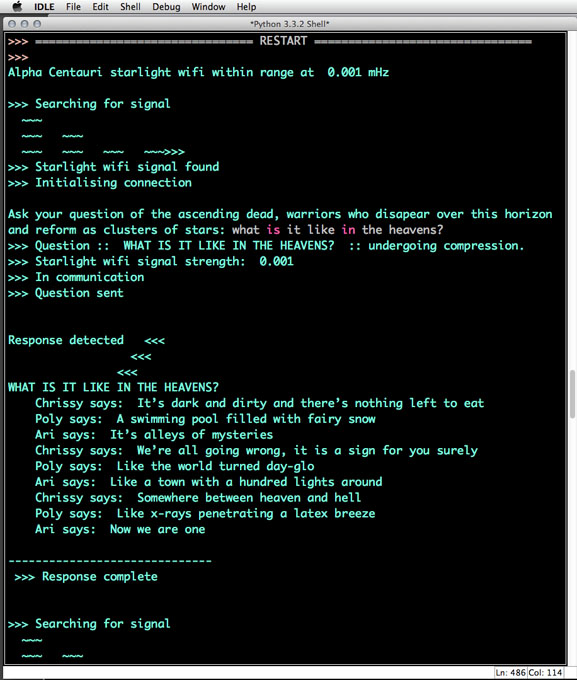
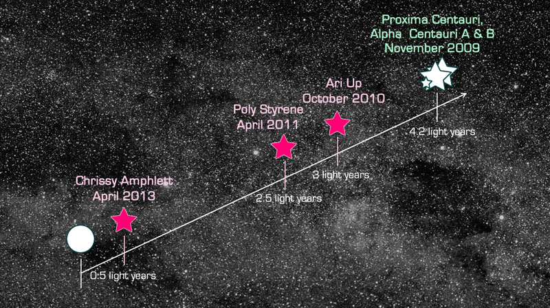

Linda Dement is a Sydney based artist who has worked in arts computing since the late 1980s. Originally a photographer, her digital practice spans the programmed, performative, textual and virtual. Her work deals with issues of disturbance, commingling psycho-sexual corporeality and the digital and electronic, giving form to the difficult territory of the unbearable and conflicted with precision and control.
Awry Signals: A Eulogy for the Stellar [Girls] is code séance performance installation, a device to tap into a starlight WIFI beam in order to receive messages from the three stellar punks now making their way along it to the heavens; they shine up the cathedrals of light in the night sky.
Awry Signals: A Eulogy for the Stellar [Girls] is an homage to the radical lives of three great women who are all recently deceased: Ari Up of the Slits (1962–2010), Poly Styrene of X-Ray Spex (1957–2011), and Chrissy Amphlett of the Divinyls (1959–2013).
We propose this to be a radical network with voices from beyond | Dead stars go to the stars | text based séance | warnings / advice from these banshees via starlight wifi network.
The work is driven by starlight network (astero seismology, lux); the pulsations of a star’s data give rhythm to the work. We pick up Internet data via WI-FI about the position of Alpha Centauri. The programming language Python is used to manipulate this and the text, we use a rasberry pi and a small monitor.
The work predominantly is speaks to Chrissy, Ari and Poly, about their travel out to the heavens, and the vibrations that they have left with us, their lyrics resonating on the earthly plane as cut ups, forming a series of satirical aphorisms. A table of phrases is gleaned from the women’s lyrics; then by matching these phrases, the output on the screen, allows conversations between the three dead girls to continue. The text that appears on-screen is a key element of the work.

In some belief systems it is said that deceased warriors first disappear beyond all visible horizons and then reappear in the firmament as multitudinous star clusters. Some of the stars nearest to earth are in Alpha Centauri, a binary system composed of Alpha Centauri A and B, close to a third star, Proxima Centauri. Alpha Centauri is 4.3650 light-years away, while Proxima Centauri is 4.241 light-years away. We need this level of detail because we can see how in the firmament the past is visible in the light of the stars and the present is delayed by distance. Light transmission comes to us at 300,000 kilometres per second, traversing the cosmos to show us something that once was, but is no longer a living reality. Recent years have seen the deaths of these three great women who have inspired us during their lives: Ari Up of the Slits (deceased October 2010), Poly Styrene of X-Ray Spex (deceased April 2011), and Chrissy Amphlett of the Divinyls (deceased April 2013). Therefore, it is our calculation that some of the light we see in the night sky comes to us from a time when all three were still alive. A direct beam of starlight Wi-Fi is now passing back through their last days, deaths and afterlives.
